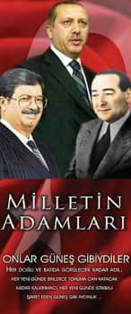

AK Parti tarafından 2007 seçimleri için hazırlanan afiş
Bu bölüm 2000'li yıllar Türkiye'sine muhafazakârlık, din ve kadınlar açısından bakmayı hedefliyor. Bakış açımı; ràdikal bir feminizm yanlısı olan ideolojik âlemim, İstanbul'da bir kadın ortakla esnaflık yapmama dayanan sınıfsal varoluşum ve 80'lerden itibaren feminist hareket içinde yer almış bir kadın oluşum belirlemektedir. Son on yılı ele alırken kafamda oluşan ve arkadaşlarımla paylaştığım yer yer karışık soru, düşünce ve duygularımı sizlere de aktarmaya çalışacağım.
Bir toplumsal olaya, gelişmeye veya döneme kadınlar açısından bakmak, bütün olaylara ve gelişmelere bakmayı gerekli kılıyor. Çünkü kadınlar dünyanın her yerinde olduğu gibi bizim ülkemizde de nüfusun yarısını oluşturuyor. Dünyanın başına gelen ve de Türkiye'nin başına gelen her şey kadınların da başına geliyor. Ama aynı zamanda kadınların sadece kadın oldukları için başlarına gelenler var. Kadınlar dünyanın her yerinde insanlığın anası olarak yüceltilen ve ama aynı zamanda insanca haklardan kolayca mahrum bırakılan bir cins olarak yaşarlar. Öyle ki; kadınların çoğu, "insanlığın anası" sıfatı başlarında manevi bir taç olarak varsayılırken, "kadınlık durumu" gereği sistemli bir şekilde fakir, az bilgili, bağımlı, çaresiz, yersiz, parasız, can güvenlikleri olmayan, gözetlenen, kapatılan ve denetlenen olarak bırakılabilirler.
Kadınlık din gibi değiştirilebilir, ülke gibi oluşturulabilir, gençlik ve çocukluk gibi geçici, siyah olmak veya Kürt olmak gibi dünyanın belli bölgelerine mahsus bir durum değil. Kadınların sadece kadın oldukları için ezildikleri, sömürüldükleri ve insani haklardan mahrum bırakıldıkları iddiası feminizmin anafikridir. Bu durumdan sadece kadınlar olarak, kadınlara özgü yöntemleri geliştirerek ve tek önceliği kadınlar olan bir anlayışla mücadele ederek kurtulabiliriz, bu iş "erkeklerle el ele olmaz" demek de feministlerin politik iddiasıdır.
Kadınlar geride kalan iki yüzyılda bir halden başka bir hale geçtiler. Kadındılar insan oldular. 18. yüzyılda başlayan isyan ve uyanışları 20. yüzyılda sıçrama yaparak sürdü. Sıçrama 70'lerde oldu. Feministler, zamanında "Bütün insanlık adına, sosyal olguları inceliyoruz" diyen "bilimadamlarının", şu ya da bu tarz düşünen siyasetçilerin, sınıf temsilcilerinin, edebiyatçı ve gazetecilerin böyle yapmadıklarını ortaya çıkardılar. Neden böyle yapmadıklarını teorileştirdiler. Öyle ki; bir "dünya" vardı, bir de "kadınların dünyası." Dünya erkeklerin, kadınların dünyası ise erkeklerin dünyasının uzantısı veya erkeklerin sığınağıydı. Her halükârda gölge bir dünyaydı. İşte kadınlar bu gölge dünyadan dışarı çıktılar. 21. yüzyıl feminizmi bu gölge dünyanın, geleneksel anlamlarıyla "domestik" olanın, başka bir deyişle "kadınsı" olanın etkisini önemsemeden yapılan teorileştirmelere yabancıdır. Ev içinin üretime katkı yapan ekonomik yönü ise başlı başına bir çalışma ve tartışma alanıdır. Hayatlarımızın, aile ve çocuklar etrafında örülen "kadınsı"lığın geleneksel sonuçlarını benimseyerek, yani güçsüzlüğe, mülksüzlüğe, iktidarsızlığa katlanarak sürüp gitmesinin cinsimizin çıkarına olmadığı açıktır. Oysa erkekler bu sistemden sınıfları farklı olsa da yararlanırlar. Kadınların aşk, annelik ve müminelik rolleri uğruna oluşmuş peşin kabulleri olmasa bu düzenin sürmeyeceği de açıktır. Öte yandan feminist düşünce, kadınların insan haklarından kadınların kurtuluşuna uzanan geniş bir hedef yelpazesi içinde siyaset üretmekte ve önerdikleriyle siyaset teorisinin içinde yer almaktadır.
Fıtrat Ve Toplumsal Cinsiyet
Bugün "bütün toplumsal olaylar muhakkak 'toplumsal cinsiyet' açısından da ele alınmalı" fikri dünyaya kabul ettirilmiş durumda. Ben maddeci bir feminist olarak kadın cinsi ile erkek cinsi arasında bir çıkar mücadelesi olduğu unutulmadığı taktirde toplumsal cinsiyet kavramının yararlı olduğunu düşünüyorum. Ama bu ayrı bir tartışma konusu.
Toplumsal cinsiyet kavramı lügatlere feminist düşüncenin bir ürünü olarak girmiştir. Bu terim 1970'lerde kullanılmaya başlandığında amaç kadın ve erkek rollerinin doğal ve değişmez olduğuna karşı çıkmaktı. Simone de Beauvoir'ın deyişiyle "kadın doğulmuyor, olunuyordu." Feministler antropolojik çalışmalar yaptılar, yapılan çalışmaları gündeme soktular. Farklı kültürlerde, ekonomik sistemlerde ve farklı yerleşim merkezlerinde, kadınlık ve erkekliğin farklı biçimde yapılandırıldığını görüp gösterdiler. Kadınlık ve erkeklik biyolojik olarak elbette birbirinden farklıydı ama kadınlık ve erkeklik insanlık için birer toplumsal kurgunun ürünü olan değişebilir özelliklere sahip durumlardı. Toplumsal cinsiyet doğuştan gelenden, İslam dininin bir kavramını kullanacak olursak "fıtrat"tan başka bir şeye işaret eder. Fıtrat kelimesi, "ilk yaradılış" manasına gelir. Ayrıca hilkat, tabii eğilim, hazır olmak, huy, cibiliyet, içgüdü, istidat gibi manalara da gelir. Varlıkların temel yapısı ve özellikleri, yaradılış, değişim ve gelişim ilke ve kanunları da fıtrat kelimesinin anlamları arasındadır. Fıtrat kavramının ilahiyat ve felsefe açısından anlamı bizleri aşan apayrı bir konudur.
Bizi son yirmi yıldır çokça kullanılan "kadın fıtratı" kavramına popüler olarak yüklenenler ilgilendirmektedir. Fıtrat hem değişebilir hem de değişmez yönlerimiz olduğunu işaret edebilecek bir kavram olarak da kullanılabilirdi. Ama yaygın ve egemen kullanımı değişmez, değişmesi teklif edilemez egemen ve yürürlükteki İslamcı kurallara dayanak edilen kadın özelliklerini işaret etmektedir. Türkiye'de egemen İslamcı öğretinin yaygınlaştırılmasında kullanılan en yaygın eğitim araçları "ilmihal"lerdir. Bunlar soru-cevap tekniğiyle yazılmış rehber kitaplardır. Yazarları pek çoktur. Pek azının isimlerini sayıyorum. Rauf Pehlivan, Halit Doğan, Asım Uysal, Abdulvahap Öztürk, Hamdi Döndüren, Mustafa Kasadar. Sizler bu isimleri duymamış olabilirsiniz. Ama yüz binlerce kadının gönüllü okuru olduğu yazarlardır bunlar. Bu kitaplar ve bu kitapları içeren kasetleri, CD'leri, videoları ve internet siteleri kadınlara uymaları gereken yaşantı kurallarını anlatır. Bu mecralarda kadınların sorularına cevaplar verilir. Cevaplarda kadınlar fıtratları gereği sahip oldukları özelliklere göre yönlendirilir. Bu rehberlere göre kadınlar fıtraten zayıftır, korunmaya muhtaçtır, kıskançtır, çalışıp para kazanmaya uygun değildir, naziktir, zariftir, sadıktır. Bu sıfatlar daha çoktur. Ama fıtratı dışına çıkan kadının erkekleşeceği uyarısı bütün rehber yazarların ortak fikridir.
Türkiye'de gerek popüler ilmihal yazarları gerek politik iktidar sahibi olan muhafazakâr dinsel düşünce sahibi erkek ve kadınlar için yazdıkları eleştirilemez bir kişi olarak konumlandırılmış olan Said Nursi, Risaleler'de, "Tesettür, kadınlar için fıtridir ve fıtratları iktiza ediyor. Çünkü kadınlar hilkaten zayıf ve nazik olduklarından, kendilerini ve hayatından ziyade sevdiği yavrularını himaye edecek bir erkeğin himaye ve yardımına muhtaç bulunduğundan, kendini sevdirmek ve nefret ettirmemek ve istiskale maruz kalmamak için fıtri bir meyli var diyor ya! İşte bu ifadeyi ve yazarını açıkça eleştirmeden örtülü veya değil, inançlı ve inançsız kadınlar olarak ne kadar güçlenebildik, ne kadar güçlenebiliriz bu soru tekrar tekrar sorulmalıdır.
Toplumsal cinsiyet bugün, Türkiye gibi pek çok ülkede akademik ve siyasi olarak "resmi" söylemlerde yer almaktadır. Türkiye'nin de imzacısı olduğu Kadınlara Karşı Her Türlü Ayrımcılığın Önlenmesi Sözleşmesi (CEDAW), bu kavramı esas alan bir yapıya sahiptir. Kadın fıtratı kavramının milletçe kabul gören, yaygın erkek egemen kullanımı ile toplumsal cinsiyet kavramı karşılaştırılmalıdır. Bunun yaratacağı değerler çatışmasından kaçınmamak kadın hareketinin bir ihtiyacıdır. Böylece Türkiye'de iki erkek egemen parti olan CHP ve AKP arasındaki siyasal rejim etrafında cereyan eden çekişmeyle farklı bir şekilde ilişkilenmek mümkün olacaktır. Bence 2000'lerin ilk on yılı boyunca yer yer feministlerin de dahil olduğu bir "sol-liberal toplumsal muhalefet güçleri cephesi" dinsel ideolojilere yönelik açık bir eleştiri yükseltmemiş, böylece, İslamcı-muhafazakâr ideolojilerin ve siyasal iktidarın bu açıdan yıpratılmadığı, adeta esirgendiği bir durum ortaya çıkmıştır.
Şu göz önünde tutulmalıdır: Bu konuları tartışmak, eşi veya babasının ya da bir topluluğun korumacı desteğini almamış bir kadın için her zaman tehlikeli olabilmiştir. Çünkü bu temalar çok kolayca kadınların dini, imanı ve namusunu ortaya dökmesi gibi algılanır. Kutsal olduğu iddia edilen herhangi bir kavram hakkında eleştirel konuşmanın zorluğunu nüfusun çoğunluğundan farklılaşmış, büyük şehirde bağımsız hayatlar kurmuş kadınların anlaması hayli zordur. Türkiye'de bağımsız entelektüel platformlar ise dinsel düşünceyle zıtlaşmayı laik ve baskıcı bir devlet anlayışına destek çıkmak olarak algıladıkları bir on yılı geride bıraktılar. Bu koşullar, maalesef kadınlar için dinsel dogmaların ne kadar yıkıcı etkileri olabileceğini iddia eden yegâne güç olarak "cumhuriyetçileri" egemen bir konumda bırakmıştır.
Muhafazakârlık Nedir?
Muhafazakârlık konservatizm'in Türkçesi olarak dilimizde kavramlaşmış bir kelime. Dolayısıyla muhafazakârlık denildiğinde benim aklıma gelen ilk siyasetçi Margaret Thatcher, ilk yıl 1980 oluyor. Malum 80 sonrası yeni-piyasacılığın ve yeni-konservatizmin annesi gibi anılan kişi 1979'da İngiltere'de başbakan olan Thatcher'dı. Margaret Thatcher kadınların siyasete katılımının illa ki cinsimizin hayrına olmayacağının canlı bir örneği olmuştu. Siyaset bilimciler muhafazakârlık kavramının babası olarak da Burke'yi gösteriyorlar. 1729 Dublin doğumlu İrlandalı-İngiliz siyasetçi Edmund Burke'nin 80 sonrası yeni muhafazakârlara ilham veren aktüel bir vizyonu var. Burke köklü bir değişim olan 1789 Fransız İhtilali'ne karşı çıkan ve bu karşı çıkışını Reflections on The Revolution in France'ta ifade etmiş bir siyaset teorisyeni. Burke'den bugüne muhafazakâr düşüncenin vasıfları olarak aynen kalmış altı temayı Erik Jan Zürcher şöyle aktarıyor (Zürcher, 2003)
1. Dinin önemi.
2. Reform adına kişilere haksızlık yapılması tehlikesi.
3. Rütbe ve görev ayrımlarının gerçekliği ve arzu edilirliği.
4. Özel mülkiyetin dokunulmazlığı.
5. Toplumun bir mekanizmadan ziyade bir organizma olduğu görüşü.
6. Ve nihayet geçmişle kurulan sürekliliğin değeri.
Muhafazakârlığın bir diğer özelliği devrimci kopuşlara karşı bir tepki fikriyatı olması. Bu ideoloji Fransız İhtilali'ne karşı çıkışının misli misli fazlasını Bolşevik Devrimi'ne karşı oluşturarak tarihsel serüvenini başarıyla sürdürmüştür. Sovyetler Birliği 90'larda çöktü. Dünya artık büyük devrimler çağında değil. Geçmiş devrimler bugün sadece bir tartışma konusu. Artık özel mülkiyete dokunulması tehlikesi mevcut değil. Bunu yapacak olan fakir sınıfların örgütlü isyanı tehlikesi bile yok. Ama bugün özel mülkiyeti sorgulayan iktisat teorileri görünmez kılınmaya çalışılıyor. Topluma yön vermeye çalışan her türlü devrimci yaklaşımı toplum mühendisliği olarak eleştirmek yaygın kabul görüyor. Son yirmi beş yıldır bizim ülkemiz gibi pek çok ülkede din, en fazla önemsendiği döneme girdi. Dolayısıyla muhafazakârlık, 2000'li yılların literatürüne komünizmin yenilgisiyle güçlenmiş, yenilenmiş bir düşünce akımı olarak girdi diyebiliriz.
Muhafazakârlık tanımı kadınlar açısından yapılacak olursa ne görürüz? Muhafazakârlar kadınların toplumsal yaşamdaki yerinin, devrimci kopuşlarla değişimine şiddetle karşıdır. Peki muhafazakârlar klasik kadın-erkek rol ayrımında reformlarla olsun bir değişiklik isterler mi? Bence hayır. Hatta şunu iddia edebiliriz: Muhafazakârlar özel mülkiyetin kutsallığına ve toplum içi hiyerarşinin gereğine verdikleri kıymeti aşan oranda, kadının güzel ve masum anne olarak tanımlanmış toplumsal rolüne değer verirler. Muhafazakâr insanlar ruhsal olarak da süregidendeki güzelliğe, çoğunluk tarafından kabul edilmiş olandaki huzura bağlıdırlar. Unutulmamalıdır ki eşitlikçi feminizmin öncüleri olan kadınlar Fransız İhtilali'nin altüst oluşları içinden çıkmıştır. Avrupa'da feminizmin ikinci dalgası, düşünürlerini ve militanlarını sosyalizm, anarşizm, komünizm, anti-emperyalizm hareketlerinin içinden, bu güçlerin etrafından, bu yapıların önder erkekleri ile içeriden kapışan kadınlarının arasından çıkarmıştır. Amerika feminizmi kendini her zaman muhafazakârların karşı tarafında, sivil haklar savaşı içinde konumlandırmıştır. Kim "Muhafazakâr düşünce herhangi bir evresinde kadınların toplumsal rol ve konumlarının gelenekselden kopmasını istemiştir..." diyebilir? Kim "Muhafazakâr düşünce kadın-erkek iş bölümünde rollerin değişmesinin cinsimiz için hayırlısı olduğunu savunmuştur..." diyebilir? Kimse diyemez. Çünkü böyle bir şey olmamıştır, olamaz.
Cumhuriyet
Türkiye Cumhuriyeti'nin kuruluşu birçok özellik taşıyor. Bunlardan birisi kadınları seküler-laik-dindışı bir medeni yasaya bağlı vatandaşlar haline getiren bir dizi reformdur. Bu reformlar gerek biçimi (yukarıdan aşağı) gerekse içeriği (eşitlik söylemi) ile bugünün muhafazakâr-demokratlarının ve liberallerinin ağır teorik eleştirisini almıştır. Cumhuriyetin kuruluş sürecinde kadınlarla ilgili yapılan reformlar kadınları ailenin merkezinde olduğu erkek egemen sistemden koparmayı düşünmemiştir. Bu atılımın sembol kadınlarından Afet İnan 1930 yılında yapılan tarihi 3 Nisan Konferansı'nda, "Kadınların evini barkını bırakıp parti mücadelesine girişmelerini kadınların siyasal ideallerine muhalif bulurum" diyerek çizilen sınırı göstermiştir (Tekeli, 1982). Yani kadınlar siyasete katılabilir ama evin düzeni önce gelir. Yani ev düzeni olmayan kadınlar ki millet onları kadından saymaz diyebiliriz, siyaset yapabilecektir. İktidarın koyduğu setler cumhuriyet öncesi başlayan kadın aydınlanmasının önünü kesmiş ama durduramamıştır. Birinci dalga feminizm kendi savunucularını Osmanlı düzeni içinde var etmiştir. Bu donanımı almış kadınlar aldıkları eğitimle güçlenmiş fertler olarak topluma karışmışlardır bir kere. Yüzyıl sonunun pozitivist Osmanlı aydınları arkalarında tek başına karar alabilen ve tek başına hareket edebilen genç kadınlar bırakır. Senaryosunu Nezihe Araz'ın yazdığı bir Halit Refiğ filmi vardır. İnternet ortamındaki herhangi bir tanıtımından bir alıntı yapıyorum. Şöyle denmiş: "Osmanlı paşası Recai Bey (Haluk Kurtoğlu), kızı Şeref'i (Gülşen Bubikoğlu) bir erkek evlat gibi yetiştirmiştir. Şeref, pàdişahı devirmek isteyen vatanseverlerce düzenlenen toplantılara katılmaktadır. Gazeteci ve müzisyen Feyyaz Bey (Cihan Ünal) de bu vatanseverlerden biridir."
1983 yapımı bu filmi feminist kadın arkadaşlarımla seyredip çok etkilendiğimizi hatırlıyorum. Öyle ki bu filmde kendini aşan Gülşen Bubikoğlu, Cihan Ünal'ı solda sıfır bırakır. Hem oyunculuk olarak hem de yaşattığı karakterle. Kadınlar için bu yüzyıl sonu gelen dönüşümün ibresi iktidar hedefine yönelik değildir. Kadınlar hürriyet isterken, kendi hayatlarını bilinen geleneksel usulün dışında yaşamak hürriyetini isterler. 20. yüzyılın sonuna denk düşen bu ve benzeri altüst süreçleri kadınlara birinin kızı veya eşi ya da kulu olmak dışında bir varoluş imkânı vermiştir. Bunun kadınlar için az bir şey olduğu söylenebilir mi hiç?
Yeni Yüzyıl
21. yüzyılın ilk yarısında Türkiye'nin ekonomik olarak bir dönüşüm yaşadığı, iktisat bilimiyle uğraşanların hemfikir oldukları bir tespit. Bu dönüşümün hem ülkemiz, hem de kadınlar için ekonomik olarak ne anlama geldiğinin analizi bu kitabın konusu değil.
Benim bulunduğum yerden çıplak gözle gördüğüm; bu on yılda eski zenginlerin yerlerinde durduğu ve topluma katılan yeni zenginlerin olduğu. Ama aynı zamanda bu zenginlerin misli sayıda insan fakirleşiyor. Türkiye alışveriş merkezlerinin orta ve üst sınıf kadınların hayatının en önemli gezme, eğlenme ve çocuklarını oyalama mekânları olarak sivrildiği bir tüketim toplumu olarak değişiyor. Yoksulluk da değişiyor. Nitekim bazı araştırmaların sunduğu veriler de yoksulaşmanın, kadınlar ve erkekler için kendine özgü yeni özellikler kazanarak artma eğiliminde olduğunu ortaya çıkardı (Buğra, 2005). Bu on yılı kadınların önüne çıkan iş imkânlarının bol olduğu, herkesin parasız, yaygın ve nitelikli eğitime çağrıldığı, siyasi yönetimlerin kadınları çalışmaya teşvik etmek için uğraştığı bir on yıl olarak görmek zor. Kendisiyle yapılan röportajda, "Bir kadının ekonomik bağımsızlığa ihtiyacı mutlaktır mesajını vermek istiyorum..." diyen birinin sözleri hiç aklımdan çıkmıyor. Bu ses kocasından ayrılmaya çalışırken şiddet gören Emine Gürün'den geliyordu. Milli Görüş hareketinin ve AKP'nin efsanevi eski Konya belediye başkanının eşi dayak yediğini belgeleyerek karakola başvurmuştu. Tesettürlü ve güçlü bir kadındı. Karakolda ve savcılıkta kadın hareketinin kazanımı olan yasalardan yararlanarak hakkını aramıştı. Boyunca çocuklar büyütmüş bu kadının, eminim o güne kadar, kadınların ekonomik özgürlüğü en önemli toplumsal sorundur, diye bir telaşı olmamıştı.
Bu tekrar tekrar anlattığım örnekten bazı sonuçlar çıkarmak mümkün. Şöyle ki, ekonomik özgürlük lazım olduğu anda birden edinilebilen bir durum değil, dolayısıyla bir kadınlık ideali olarak küçük yaşta, en azından gençlikte edinilmeli. Evlilik kadınların gelecek garantisi olarak gördükleri bir kurum olmamalı. Kadınlar erkeklerle kaçgöç olmadan birlikte çalıştıkları zaman ahlàksız olmayacaklarına inanmalı. Kadınlar ücretlerini sadece "ev bütçesine katkı" diye görmemeli Eşit işe eşit ücret istemekte ısrar etmeli. Daha önemlisi, bir koca sofu bir Müslüman veya hızlı bir devrimci olsa da, bunun bir kadının geçim güvencesi olamayacağı kadınlara öğretilmeli. Bir de şu bilinmeli: Kadın-erkek eşitliği fikrine karşı olan kişiler de başı sıkışınca kadınların mücadelesiyle elde edilen eşitlikçi-laik yasaların onlara verdiği imkânları kullanır.
Kadınlar yazılı yasaların onlara kazandırdıkları hakları kim olurlarsa olsunlar kullanabilirler: Ama ne pahasına? Hangi yollardan geçerek? Nasıl bir cesaret göstererek? Mor Çatı'nın şiddet gören değişik kadınların yaşadıklarını anlatılaştıran kitabı çok fazla kadının ev içinin yasasından kamunun yasasına uzanan dar koridorun kapısını ya hiç açmadığını ya da trajik bir noktada evlerin kapısı kırılarak kendilerini kurtarmaya çalıştıklarını anlatır. Bu anlatılar tekrar tekrar aynı soruyu akla getirir: Milletin bir kısmının dirençsiz kabulünü gören yazısız kurallar mı, yoksa kamunun ortak yasası mı savunulmalıdır? Değişim için evlerin kapıları bir felaket beklenmeden mi kırılmalıdır, yoksa ev içi şiddet trajedileri geleneksele mi teslim edilmelidir? (Bkz. Şiddete Karşı Anlatılar, 2009)
Milletin Üç Adamı
Malum, Kasım 2002 milletvekili genel seçimleri sonucunda, Adalet ve Kalkınma Partisi 34,28 oy oranıyla 363 milletvekili çıkardı ve AKP "tek başına iktidar" oldu. Recep Tayyip Erdoğan 11 Mart 2003'te 59. Hükümet'i kurmakla görevlendirildi. AKP, 1950'den sonra tek başına iktidara gelen dördüncü parti oldu. Demokrat Parti üç kez, Adalet Partisi iki kez, ANAP da iki kez tek başına iktidara gelmişti. AKP, 1957'den bu yana tek başına iktidara gelen partiler arasında en fazla milletvekili çıkaran parti oldu. 1957'de Demokrat Parti 419 milletvekili çıkarmıştı. AKP, her üç seçmenden birinin oyunu aldı ve Milli Görüş çizgisinden doğan bir parti ilk kez tek başına iktidar olmuş oldu. Hakkındaki kapatma davası süren AKP, cumhuriyet tarihinde başbakan adayı belli olmamasına karşın iktidarı kazanan ilk parti oldu. 3 Kasım seçimlerine katılamayan AKP Genel Başkanı Recep Tayyip Erdoğan, 9 Mart 2003 Siirt milletvekili yenileme seçiminde Parlamento'ya girdi.
Bu tabloya bakarak Türkiye halklarının çoğunluğunun, çok uzun zamandır muhafazakâr sağcı partilere daha fazla oy vermiş olduğunu söyleyebiliriz. Nitekim Adalet ve Kalkınma Partisi 22 Temmuz 2007 seçimleri öncesi gazetelere, panolara, parti binalarına "Milletin Adamları" başlığı altında resmedilmiş üç lideri gösteren afişler astılar. Birçok sosyal paylaşım sitesi bu illüstrasyonu "Milletin Şerefli Adamları" başlığıyla sembolleştirdi. Samsun gibi pek çok AKP ili, şöyle bir tanıtımla, bu resmi kartpostal halinde basıp dağıttı:
"Onlar Atatürk ile perçinleşen millet sevgisinin simge isimleri. Onlar bu toprağın sesi, vicdanı, atılım ruhu. Onların yüreğinde millet, milletin yüreğinde onlar. Onlar Milletin Adamları. Onların en önemli ortak özelliği milletin içinden çıkmaları, milletin onlara sahip çıkmasıdır."
Ben bu dev afişi iş dönüşü Kadıköy vapur iskelesinin karşısında görmüştüm. Bu tabloda milletin kadınları elbette bu başarılı erkeklerin arkasında görünmez bir yerlerdeydiler. Üç dev figür adeta bir tribünden aynı yöne bakıyorlardı. Resmedilmiş karşı bir tribün olsa orada Atatürk, İnönü ve Ecevit mi oturuyor olacaktı acaba diye düşünmüştüm o gün. Atatürk savaşla başa geçmişti, İnönü seçilmemişti. Dolayısıyla hayli yüksek oy alan Ecevit milletin adamı olabilirdi bu yaklaşımla. Ama olmazdı. Demek ki burada bir kriter vardı ve bunun belirleyeni çok oy almak değildi. Ayrıca peki mesela Süleyman Demirel niye bu fotoğrafta yoktu? O ki Çoban Sülü'ydü. Bir Orta Anadolu köy çocuğuydu. O da oy almıştı. Kim onu milletin bağrından çıkarıp atmış olabilirdi? Ayrıca bu fotoğrafta hiçbir şekilde çağrışım zincirine giremeyen Erbakan ve Türkeş ise artık tozlu olduğu varsayılan Milliyetçi Cephe raflarında kalmış oluyorlardı. Erbakan ihanete uğramış ve yasaklı, Türkeş ise ordu kökenliydi. Bu afişin bir diğer çağrışımı ise toplumun çoğunluğunun onaylamadığı kişilerin "milletin adamı veya kadını olamayacağıydı."
İronik bir şekilde "erkekliği", yani kadınların günlük deyimiyle değiştirmeyi düşünmedikleri olumsuz özellikleriyle "erkek milletini" temsil etmek gibi bir nitelik açısından da bu propaganda afişi incelenebilirdi. Bu üç adam gerçekten de müesses erkek egemen nizamın devamına hizmet etmiş "erkek milletinin" üç ferdi, milletin bu özellikleriyle de bağrına bastığı "üç adamı"ydı. AKP propaganda ekibi açısından ise hedef başka olsa gerekti. Bu üçlüyü birbirine bağlayan, birbirinin devamlısı kılan herhalde 2002'de güncellendiğini düşünebileceğimiz yeni "muhafazakâr" sıfatı olmalı. Burada muhafazakârlık "Yeter söz milletin!" diyebilenleri takdir etmek, T.C.'nin "kurucu egemenlerine" ve kurumlarına karşı olabilmekle değerleniyor, bu kampanya gücünü ispatlamış AKP'yi "muhafazakâr demokrat" sıfatıyla bu üç halkalı zincire bağlamayı hedefliyordu.
Muhafazakârların Düşmanları
Muhafazakârlık kavramının Türkiye siyaset ortamına büyük ve "reel" girişini 2002'de AKP'yle yaptığını söyledik. Bu aslında muhafazakârlığın yeniden tanımlandığı bir evrenin sonuydu. Adalet ve Kalkınma Partisi çıkış broşürlerinin önsözünün ilk cümlesinde R. Tayyip Erdoğan'ın belirttiği üzere partinin siyaset felsefesi muhafazakâr demokrasi olarak belirlenmişti. Bu önemli kitapçığın yazarı Yalçın Akdoğan "muhafazakâr demokrat siyaset"in tanımını şöyle vermişti:
"Muhafazakârlık, Aydınlanma'nın kimi olumsuz sonuçlarına, dönemin siyasi projelerine ve bu siyasi projeler doğrultusunda toplumun dönüştürülmesine ilişkin öneri ve uygulamalara muhalif olarak ortaya çıkan, rasyonalist siyaseti sınırlamayı ve toplumu bir tür devrimci dönüşüm projelerinden korumayı amaçlayan; yazar, düşünür ve siyasetçilerin eleştirilerinin biçimlendirdiği bir siyasi felsefeyi, bir düşünce geleneğini ve zaman içinde onlardan türetilen bir siyasi ideolojiyi ifade etmektedir." (Akdoğan, 2003)
Türkiye'de 80 sonrasının yükselen İslamcı yazarı Ali Bulaç bu tanımı onaylarken, "Muhafazakâr konsept, 19. yüzyıldan bu yana toplumu kale almayan Fransız tipi Aydınlanma'yı herkese dayatan, jakoben ve benmerkezci müdahalelere karşı, toplumun kendisini öne çıkaran, kişilik sahibi sorumlu insanı özgür ve özerk bir özne olarak siyasi alana sokan siyaset olur. 'Muhafazakârlık', tarihin imbiğinden geçmiş, zaman içinde test edilmiş ve geleneksel formlar içinde geçmişten bize tevarüs edilmiş değerlerin korunması (muhafaza) şeklinde anlaşıldığında, bundan çok sayıda siyasi, sosyal ve kültürel yapının içinde yer aldığı değerler bütünü ve bu değerlerin sürekliliği anlaşılır" diye yazar (Bulaç, 2007, www.koprudergisi.com).
Muhafazakârlık kavramının 80 sonrası sol-muhalif bazı akademisyen ve yazarlar tarafından ele alınışı, AKP'nin 2000'lerde iktidara taşıdığı "yeni-demokrat-muhafazakâr güce" en büyük meşruiyeti kazandıran kaynaklardan biri olmuştur diyebiliriz. 1989 yılında yeniden yayımlanmaya başlanan Birikim dergisinin birinci sayısında yer alan, Ahmet İnsel tarafından yazılan "Liberalizm, Muhafazakârlık ve Türkiye'de Toplumsal Tahayyül" başlıklı makale bence bu açıdan önem taşıyor.
Yazı cumhuriyetin kuruluşu ve sonrası etrafında birçok tespitle doludur. Birkaçını seçtim:
1. Bir aydın despotizmi olan Kemalizmin temsil ettiği tepeden sosyal devrim ve otoriter devlet anlayışına ilerici, İngiliz meşruti demokrasisi benzeri bir sistemi arzulayan liberallere gerici yaftası takılmış, böylece 1980'e kadar sürecek olan milliyetçi, merkeziyetçi, otoriter devlet anlayışının ilerici devrimci olarak kabul edilişinin temelleri atılmıştır.
2. Batılılaşma devlet katından yapılmıştır ve seçkinlerin çağrısıdır. Halk teknik olarak bu çağrıya açıktır ama örf ve âdette değil.
3. Cumhuriyetin ilanıyla yeni bir dönem başlar. Devlet içi hesaplaşma ceberrut devlet geleneği yöntemleriyle likidite edilir. Devlet bu kez toplumun örf ve âdetlerinde, günlük yaşamında, özel dünyasında, yaşamına anlam veren sembollerinde Batılılaşmasını emreder. Verilen süre sınırlıdır. Emre itaatsizliğe tepki şiddetlidir.
4. Cumhuriyet devrimi toplumsal tahayyülün en ücra köşelerine kadar kendi denetimi altında bulunmasını arzular. Totaliterdir. Resmi söylemi demokrasi olsa da bu rejim bir kesim sivil ve asker devletlinin toplum üzerindeki vesayet rejimidir. Devletin müdahaleleri karşısında iyicene içine kapanan, kabuğuna çekilen dini gelenek ise, devletin baskısı oranında muhafazakârdır.
5. 1947 ruhu, "Yeter söz milletin!" demektir. Bu Türkiye'ye özgü bir liberal dünyayı yansıtır. 1947 ruhu halkın umut söylemidir. Aydın despotluğuna karşı tepkileri ifade eder, teknik konularda yeniliğe oldukça açık olan toplumsal tahayyül, toplumsal değerler konusunda muhafazakârdır. Bu muhafazakârlık bir gelenek olmaktan çok, benliğini yaptırımcı devlete karşı korumak için, toplumun tahayyül dünyasını sıkı duvarlarla çevirip, bu duvarların içine kapanmış olmasından kaynaklanır. (Numaralama bana ait.)
Yazıda öne çıkan kavramlara bakınca son yirmi yıldır muhafazakâr ve liberal düşüncenin hangi ikilemler etrafında buluşabildiklerini izlemek mümkündür. Yazıda toplumda geleneksel olarak egemen olan tutucu örf-âdet-töre-toplumsal değerler toplamının kaynağı olarak da devletçiliğin yaptırımcılığının görülmesi feminist bir tartışma başlığı olmayı hak eder. Yazıda geleneksel değerlerin devletçi yaptırımlara karşı direncine verilen önem çok yüksekken, kadınlar açısından geleneksel değerlerin ne anlama geldiğine hiç değinilmemiştir. Ayrıca geleneksel egemen yaşantı kurallarının biraz yıkılmasından mesut olan ve bu kopuşun nimetlerinden faydalanan kadınlardan da hiç söz edilmemiştir. Oysa, dediğimiz gibi, nüfusun yarısı kadındır ve gelenek dediğimiz yazısız kurallar en fazla kadınların hayatını etkiler. Bu değerler erkeklerin hayatını da tahakküm altına alır. Ama kadınlar için tahakküm kelimesi azdır. Bu, "kadınlığın anlamı" haline getirilmiş bir ayıp, yasak, günah kültürüdür.
Egemen dinsel yorumlara dayanan geleneksel dirençli-mutaassıp değerler; kadınlar için tek başına seyahate çıkamamak, mülk edinememek, kendi dininden ve mezhebinden olmayan biriyle arkadaşlık etmemek, ağabey ve babanın lafından çıkmamak, kısa etek giymemek, kocanın rızasını almayan davranışlarının sana ahirette sorulacağını bilmek, evlenmeden sevişmemek, evlenmeden yaşamamak, kendi cinsinden birine âşık olmamak, kocandan geç eve gelmemek, yabancı erkeklere kapıyı açmamak, din büyüklerinin lafından çıkmamak, içine doğduğun topluluk ne yapıyorsa ona uymak anlamına gelebilir. Daha fenası bu kurallara uymamanın sonuçları kadınlar için dışlanma, azar, dayak, ölüm olabilir; oluyor da.
Feminizmin Dostları
Ahmet İnsel elbette bu makalede kadınlara yer vermek zorunda değildi. Ama içeriğini büyük ölçüde dinsel düşüncelerle besleyen Türkiyeli muhafazakârlığın erkekler ve kadınlar için aynı ağırlıkta yasaklar koymadığı açıktır. Kadınlar, günlük hayatı günaha göre biçimlenenler, evde yaşayanlar, mahallede bakılanlardır. Ahmet İnsel 80 sonrası feminizme büyük dostluk gösteren, desteğini esirgemeyen bir ekibe dahil bir akademisyen. Burada bir şeyi hatırlamak gerekiyor: 70'lerin egemen sosyalist düşüncesi feminizme cepheden karşıydı. Onu bir burjuva ideolojisi olarak görmek âdetti. Feminizmi sistem karşıtı hareketler olarak listeleyen 80'lerin Avrupalı yeni solu ise, feminizmden etkilendi ve kadın hareketini dost olarak ilan etti. Bu Türkiye'de de böyle oldu. Bu yeni ideolojik rüzgâr tarafından "kadınlık" kuşak, etnik kimlik, ırk, cinsel kimlik, fiziksel özürlülük üzerinden tanımlanmış dezavantajlı konumdaki statü grupları içinde onlarla beraber hareket etmesi uygun görülen bir kesim olarak kodlandı. Bu sayılan grupların ortak noktalarından biri olarak "yeni solun eski solu eleştirisinin zemini olmaları" saptaması yapıldı (Arrighi ve diğerleri, 1991). Kadın hareketinin de etkisi ile hemen etrafındaki muhalif düşünce dünyası açık feminizm düşmanı eski solun kapsayıcılık iddiasından kendini ayrıştırdı. Ama feminizmin dostu olarak da kendini tanımlayan bir yeni sol doğdu ve sonra kendi kapsayıcılığını ilan etti. Türkiye'de eskiden buluşulması önerilen tek nokta vardı: Sınıf siyaseti. Artık demokrat olunması şart koşuluyordu.
80'lerde Türkiye'de şahlanışa geçen İslamcı düşünceler ve onların açık kadın-erkek eşitliği karşıtı söylem ve uygulamaları demokrasiyi önceleyen yeni sol eğilimleri pek de rahatsız etmedi. Çünkü dinsel cemaatler de baskılanan bir statü grubu olarak listeye dahildi. 90'larda herkes Stalinizmle, jakobenizmle, pozitivizmle, Kemalizmle olan kavgasını yükseltmek istiyordu. Türkiye'nin batısında İslamcılarla aynı kulvarda Medine vesikası örneğini de içeren bir sivil toplum modeli arayışı boy göstermişti. Bu arayışın hasmı her türlü "tepeden inmecilik"ti. Oysa kadınların baş düşmanı Stalinizm, Kemalizm, jakobenizm, pozitivizm değildi, olamazdı. Kadınlar her zaman hemen yanı başlarında, bazen aynı yastıkta yattıkları yerde nefes alıp veren "erkek egemen sistemle" uğraşarak güçlenebilir, ilerleyebilirlerdi.
Türkiye'de muhafazakâr güçlerle kadınlar arasındaki ilişkiye bakarken kadınların ayağına sık sık erkek merkezli siyaset analizlerinin takıldığını söyleyebiliriz. Ben 90'lardan bugüne kadar bazı feminizm dostlarının kritik entelektüel-teorik takıntılarının onları hayalperest yaptığını düşünüyorum. Hani bazen yolda veya bir mekânda kavga çıkar. Sizin bulunduğunuz topluluğa birileri saldırır. Ama siz kavga istemiyorsunuzdur. Araya girer saldırıya cevap veren dostunuzun elini tutarsınız. Sonunda dostunuz dayak yer. Çünkü siz onun elini tutmuşsunuzdur.
Kürt Hareketi Ve Başbakanın Eşitlik Anlayışı
Son on yıla muhafazakârlık açısından bakarken Kürt kadın hareketi içinde politikleşmiş kadınları ayrı tutmak zorundayız. Çeyrek yüzyılı aşan bir süredir devam eden bir kirli savaşın cereyan ettiği "bölge" ve bölgenin kadınları 2000'lerde işbaşına gelen yeni muhafazakâr AKP'yle kendi politika önceliklerine dayanan bir ilişki yaşadılar. Kürt kadınları muhafazakâr-dinci düşünceyle olan kavgalarında geri dönülemeyecek kadar ileri gitmiş olan kadın kadroları sayesinde parti içinde ve dışında özgürleşme süreçlerini sürdürdüler. "Jin jiyan azàdi" pankartını ellerinden hiç düşürmediler. Meclis koridorlarının hem Kürt, hem kadın siyasetçi görmesini sağladılar. Şimdiye kadar hiçbir T.C. başbakanı değişik kadın gruplarını Kürt meselesiyle ilgili bir açılım fikri etrafında görüş alışverişi yapmaya çağırmamıştı. Recep Tayyip Erdoğan birçok kadın örgütünü 2010 Temmuz'unda Dolmabahçe'de bir büyük istişare toplantısına çağırdı. Toplantı çelişik birçok özellik taşıyordu. Öyle ki kapısının önünde Barış Anneleri bölgedeki operasyonlara karşı politik gösteri yapıyorlardı. Bu toplantıda kadın-erkek eşitliğiyle ilgili sorulan bir soru üzerine Recep Tayyip Erdoğan, "Kadın ve erkek eşit olamaz, farklıdır, mütemmimdir. Ben fırsat eşitliğinden yanayım. Biz muhafazakâr demokratız. Halkımız bize bunun için oy verdi. Bizim politikalarımıza halk bu oyla destek veriyorsa, istiyorsa, biz bu oyların gereğini yerine getiririz" dedi. Böyle bir şey de ilk defa oluyordu. Gerçi gerek başbakan, gerek eşi her zaman eşitlik kavramından arınmış bir söyleme sahiptiler. Ama muhafazakâr demokratlar gerçeğini herkes başka türlü okuyordu. Dolayısıyla bu toplantı Kürt açılımına yaramadıysa da AKP'nin kadın politikasıyla ilgili bir görüş açıklığı yaşanmasını sağladı.
Aynı yıl feministler erkeklerin işlediği kadın cinayetlerine karşı seslerini iyice yükseltti. Bu kampanyada dikkat çekilen noktalardan biri, kadınlara karşı işlenen cinayetlerin sayısındaki artıştı. Bu artışı ispatlayan rakamlar DTP Van milletvekili Fatma Kurtulan'ın Meclis'te adalet bakanına verdiği soru önergesiyle ortaya çıktı. Adalet Bakanlığı'nın verilerine göre, töre ve namus cinayetlerinin de aralarında bulunduğu değişik nedenlerle öldürülen kadın sayısı 2002 yılında toplamda 66 iken, bu sayı her yıl artarak 2004'te 164'e, 2005 yılında 317'ye, 2006'da 663'e yükselmişti. 2007 yılında 1.011 kadın öldürülmüş, 2009 yılının sadece ilk 7 ayında 953 kadın cinayeti işlenmiş; 15 bin sanığın ancak 3'te biri cezalandırılmıştı (Habibe Yılmaz Kayar, 2009: www.Türk Hukuk Sitesi.com). Cezalandırılan faillerin hemen tamamı ise "haksız tahrik" indiriminden yararlanarak hafif cezalar almışlardı. Bu verilere göre Türkiye'de şiddet gören kadınların oranı yüzde 1.400 artmıştı.
5 Kasım 2010 tarihinde İstanbul'da düzenlenen Uluslararası Kadın Buluşması başlıklı bir toplantıya katılan başbakana karşı feministler, "Erkeklerin sevgisi her gün 3 kadını öldürüyor, siz eşit değilsiniz dedikçe daha çok öldürülüyoruz" yazan pankartlar açtılar. Pankartlar toplandı. Salondaki diğer kadınlar ise bu protestonun ardından Erdoğan'a "Türkiye seninle gurur duyuyor" tezahüratıyla destek oldular.
Bu hàdiseleri alt alta inceleyip farklı noktalara yoğunlaşmak mümkün. Ben burada problematik haline getirilmesi gerekenin başbakanın gururla taşıdığı erkek egemen doktriner zihniyet olduğunu düşünüyorum.
Milletin Adamı
Yukarıda andığımız "milletin adamları" üçlemesine geri dönüp şunu söylemek istiyorum. Bugün toplumda pek çok kişinin derin hayranlığını kazanmış bir lider olan Recep Tayyip Erdoğan'ı "milletin diğer iki adamından" ayrı bir şekilde ele almak gerekiyor. Evet Başbakan Erdoğan "erkek milleti"nin tipik bir üyesidir, evet muhafazakârdır. En önemlisi Erdoğan şu anda milletine siyasi olarak hükmeden ve özellikle taraftarı olan kadınlar tarafından çok beğenilen bir erkektir. 2002'den beri başbakanlık yürüten Erdoğan'ı ve ekibini Türkiye'nin yüz yıllık demokrasi tarihinde varılmış bir aşama olarak değerlendirmek gayretinin nafileliği çok geç anlaşıldı. AKP bu on yılda kendi geçmişini içeren büyük bir güç haline geldi. Eşitlikçi, özgürlükçü ve kurtuluşçu perspektiflere sahip kadın grupları "demokratikleştirici bir güç olabilecek muhafazâkarlar "tahayyülünden" kendilerini tamamen kurtarmak zorunda. Şunu unutmamak lazım: AKP halkın sevgisini din etrafında fedakârlıkla oluşturulmuş, uzun bir geçmişi olan bir kültürün taşıyıcısı olarak kazanmaktadır. Bu on yıla damgasını vuran AKP zihniyeti İslamcı soru-cevap kitapçıklarının ciltli veya karton kapaklı sayfaları içinde okunabilecek bir çerçeveye sahiptir. Bu çerçeve Türkiye toplumunun bir kesiminin bir ahlàk anlayışı ve bir milli benlik arayışı adına yıllardır biriktirmeyi ve yaymayı sürdürdüğü bir külliyat, bir reflekstir. Bugün iktidarda olan dinci-muhafazakâr güç Türkiye demokrasisinin tamamlanmasından önceki bir ara kabine değildir. Bir aşamayı değil kendini temsil etmektedir.
Menderes ve Özal toplumda sofu-gelenekçi eğilimlere prim, taviz ve imkân verdiyseler de, kendileri bu eğilimlerin taşıyıcısı olan çevrelerin yaşantı kalıplarının dışında hareket etmiş erkeklerdi. Menderes'in kadınlarla oldukça fırtınalı olan ilişkisi gayet özgürlükçüdür denebilir. Turgut Özal ise Mehmet Keçeciler ve Cemil Çiçek gibi mutaassıp bakanlarının göze batmasını engelleyecek kadar frapan bir özgürlükçülüğü olan eşi Semra Özal'la süslenen bir kimliğe sahipti. Recep Tayyip Erdoğan ve eşi ise bu ikilinin tersine hayatlarını gençliklerinden itibaren sekülerizm dışı bir üslupta sürdürmüş insanlar. AKP muhafazakâr bir silsile içinde yer alır ama belki de daha önemlisi anti-komünist bir "kale"yi temsil eden Milliyetçi Cephe bileşeni bir partinin içinden fırlayıp çıkmıştır. Bu ekolün her şeye bakışı bulanıklaşabilir ama kadınlara bir bakış açısı vardır ki o nettir. O da İslam dinini referans alan erkek egemen bir bakış açısıdır. Erdoğan, bence muktedir olmayı aşkla seven, kendine özgü bir lider olarak ait olduğu devirle ve devam eden ekonomik düzenle uyumlu bir İslamcı olarak ele alınmalıdır.
Burada İslamcı kavramına değinmek ve bunu ne bağlamda kullandığımı açıklamam gerekiyor.
Önce akademisyen Fulya Atacan'dan bir alıntı yapacağım:
"İslam temelinde şekillenen hareketler çeşitlidir ve çok geniş bir yelpazeyi içerir. Bu yelpazenin bir ucunda mevcut siyasal ve ekonomik yapıya bütünleşmiş ve onu dönüştürmeyi hedeflemeyen İslamcı hareketler, diğer ucunda ise mevcut siyasal ve ekonomik yapıları devrim yoluyla ràdikal bir biçimde dönüştürmeyi hedefleyen İslamcı hareketler vardır." (Atacan, 1993)
Ardından İslamcı yazar Hamza Türkmen'den bir alıntı yapmak istiyorum:
"İslamcılık, tartışmalı bir kavram. Kemalist akademisyenler, milli dindarlar ve maalesef ki onların etkisinde kalan bazı Müslümanlar, İslamcılığı 150 yıllık bir tarihle tanımlıyorlar. Onu Batı'ya bir tepki hareketine, dolayısıyla modernleşmenin etkisinde kalan bir harekete indirgiyorlar. Bence bu zaaflı bir yaklaşım. Bizim köklerimiz, ıslah ve kıyam hareketlerinde tarihi derinliğini bulur. Bu açıdan İslamcılık, kimliğin vahiyle inşası ve Kuran'la billurlaşması; akidevi, kültürel ve yaşantı itibariyle vahyi esas alan bir hayat sürme ve İslam'ı hâkim kılma; küresel veya yerel despotizme, zulme, haksızlığa, şirke ve cahilliğe karşı 'La' deme gayretidir. Sosyolojik bir tanımlama olarak hayatı İslami değerlerle okuma ve dönüştürme çabasıdır denebilir. 1970'li yıllarda İslami duyarlılığı en yüksek olan cemaatler Nakşiler, Nurcular, Süleymancılar, Kàdiriler ve onların fraksiyonlarıydı. Ama bunların her birinin kimliği mezhepçilikle, batıni anlamda tasavvuf telakkisiyle ve Kemalist sistemin onlara telkin ettiği sağcılık, devletçilik ve milliyetçilik kirleriyle maluldü." (Türkmen, 2010, www.pressmedya.com)
Bu alıntı Türkiye'de İslamcılık içi tartışmalarla ilgili fikir veriyor. Ama bizi daha çok İslamcılığın kadınlar açısından esas olan boyutunu sergilemesi ilgilendiriyor. İslamcılık bir hayat biçimi, bir ahlàki varoluştur. İslami akidelere göre yaşamak demek "özel alan" dediğimiz hayatımızı tertip eden kurallara sahip olmak, dışarı dünyanın belirsizliklerinden, zulmünden, çirkinliklerinden bunlarla korunmaya çalışmak demektir.
Feminist kadın hareketinin en önemli sloganlarından biri "özel olanın politik olduğu"dur. Bu, ne düşündüğümüz ve nelere karşı çıktığımızın değil, nasıl yaşadığımızın önemli olduğu anlamına gelir. Nasıl besleniyoruz, nasıl sevişiyoruz, nasıl doğuruyoruz, nasıl çocuk büyütüyoruz, nasıl doğurmayabiliriz, ev işlerini nasıl paylaşıyoruz, mirastan nasıl pay alıyoruz, çocukluğumuzdan itibaren neye yönlendiriliyoruz, nasıl olursak erkekler bizimle evlenir, ne giyersek bize bakılmaz? Erkek egemen sistemin örüldüğü alanları deşen bu ve benzeri soruları sormak feminizmin işidir. Dolayısıyla şu söylenebilir: İslamcı ideoloji kalan bütün irili ufaklı siyasi geleneklerden farklıdır. Bir tek o özel alanın politikasını tutarlı bir şekilde yapar, yapmak zorundadır. Böylece İslami erkek egemen sistem ve hayat huzur içinde sürecektir. Güvencesizlik ve belirsizliklerle dolu postmodern kapitalist hayat en fazla huzur ihtiyacı doğurur. İslami yayınların temel özelliği sorulan sorulara verilecek mutlak cevaplar içermesidir. Zamana ve cemaate göre cevaplar değişse de prensipler aynıdır.
Yıllar önce Emine Şenlikoğlu'nun, kocasıyla birlikte çıkardığı İslamcı kadın dergisi Mektup'ta yer alan bir reklamda şu ifadeler vardı:
"Uysal Kitapevi İftiharla Sunar: İzahlı Kadın İlmihali. Kadınlar da İslam'ı ve İslami bilgileri öğrenmelidir. Yeni evlenecek ve aile reisi olan her erkeğin bu kitaptaki bilgileri öğrenmesi ve ailesine öğretmesi bir vecibedir" diye devam eden ilanda, kitabın hazırlanış gayesi de şöyle belirtiliyordu: "İslam düşmanı Siyonist ve emperyalistler, İslam'ı yıkmak için kadını en güçlü silah olarak kullandılar ve kadının ahlàkını bozarak aileyi ve cemiyeti yıktılar... Yeni evlenecek ve aile reisi olacak her erkeğin bu kitaptaki bilgileri öğrenmesi ve ailesine öğretmesi bir vecibedir" (Asım Uysal-Mürşide Uysal, 1987). Bu ilanın çıktığı yıllarla bugünler arasında büyük farklar var. Kim bilir bu ilmihal kaç baskı yaptı?
Bugün kadınlar için oluşturulmuş İslami internet sitelerinin etrafı reklamlarla dolup taşıyor. Reklamlar her yerde tüm kadınları, "Gel, kim olursan ol yine gel..." diye çağırıyor. Bugün Mektup dergisi çıkarken doğmuş çocuklar birer genç. Bugün İstanbul'da sayıları her geçen gün artan dev reklam panoları var. 2012'nin geride kaldığı bugünlerde bu panolarda M. Fethullah Gülen'in resmi ile birlikte kitabının ilanı yer alıyor.
Çizgimizi Hecelerken isimli kitapta Gülen, kendisine sorulan sorulara cevaplar veriyor. Kitabın takdiminde şu iddia var: "Dirilişimizin yol haritasını ortaya koyacak rehber eserlere ihtiyacımız var, eser bu niyetin ürünü." Dirilişin yol haritası ne demektir bilemiyorum. Ama bu yolda 55 soru başlığı oluşturulmuş: Bunlardan birkaçını aktarmak istiyorum:
Hz. Âdem'in yaratılışı. Allah resulü kaç kere miraca çıktı? Kabirde hesap var mı? İhtilalleri meydana getiren içtimai hastalıklar. Bermuda şeytan üçgeni ve uçan daireler. Mehdi şahsi manevidir. Beşerdeki potansiyel hayır ve şer.
Demek ki birçok insanın bitmeyen metafizik-sosyal-ahlàki sorularına cevaplar aradığı, uzak vadeli bir "dirilme-yenilenme-değişme" hedefiyle beslendiği bir ülkede yaşıyoruz. Geride bıraktığımız bu on yılı bu soru ve cevapların âlemine kayıtsız kalarak anlamamız mümkün değil. Demek ki bizler de sorularımızı sormaya devam etmeli ama cevaplarımızı da oluşturmalı ve yaygınlaştırmalıyız.
Bakın İslam'da Kadın ve Aile kitabında Mehmet Emre "Kadının hayırlısı kimdir?" sorusuna nasıl cevap veriyor (s. 52):
"Cenab-ı Hakk'a ibadetini bırakmayan, kocasına itaatte kusur etmeyen ve onun kazancını saçıp savurmayan, dünyaya getirdiği çocuğunu İslami terbiye üzerinde yetiştiren, iffet ve hayâ sahibi hanımdır.
Resulullah efendimize, 'Ey Allah'ın resulü, kadının hayırlı olanı hangisidir?' diye sorulmuştu. Resul-i Ekrem efendimiz buyurdular ki: '(Kocası yüzüne) baksa onu memnun eden, bir şey emretse itaat eden, nefsinde ve malında, hoşlanmayacağı bir işte, kocasına muhalefet etmeyendir.' "
2000'li yıllar kadınlar için çok da müjdeler getiren bir dönem olarak yaşanmadı. Ama başkaldırmayı seven kadınlar, "kadınlar artık susmayacaklar, susmayacaklar" diye devam eden, bir ısrar ve tekrara dayanan sloganlarını meydanlarda atmaya devam ettiler. Feminist kadınlar kocalarından dayak yiyen, işlerinden atılan, erkek egemen düzene karşı çıkan kadınlarla dayanışmayı, örgütlenerek güçlenmeyi sürdürdüler.
Kim olduğunu hiç bilmediğim Mehmed Emre'yi kırma pahasına kocaların her istediğine uyulmayan ve iktidardaki erkeklere açık muhalefet edilen bir ikinci on yıl dileğiyle bu bölümü bitirmek isterim.